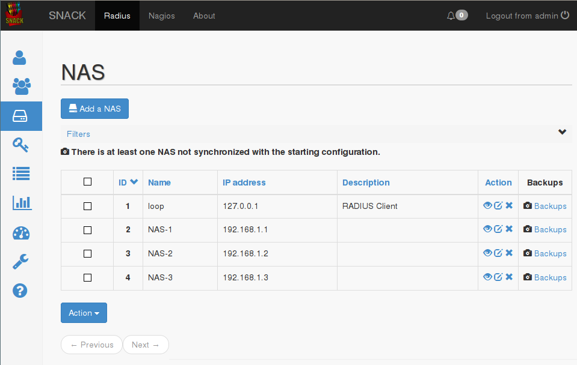
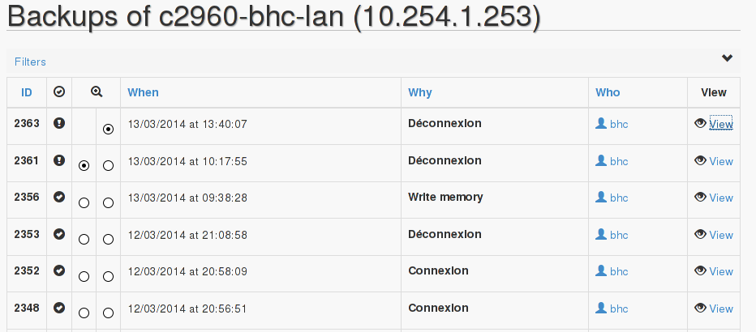

Un NAS (Network Access Server) est l'équipement qui va communiquer avec SNACK pour faire les demandes de connexion au réseau et ouvrir les ports correspondants (ou bloquer)si la connexion a échouée .
Pour créer un NAS, c'est très simple il suffit de cliquer sur « Ajouter » et rentrer les 4 paramètres demandés :
Adresse IP du NAS
Nom du NAS
Clé partagée entre le NAS et SNACK
Description (non obligatoire)
Une fois le NAS créé, il est nécessaire de redémarrer le service freeradius via le tableau de bord (ou Dashboard) .

En cliquant, sur « Backup » vous pouvez voir les différentes connexions réalisées sur le NAS en question et les dernières configurations sauvegardées .
Il est également possible de faire une comparaison entre deux sauvegardes afin de voir les différences .

Pour créer un utilisateur sur SNACK, vous avez plusieurs possibilités .
Tout d'abord cela dépend du type d'utilisateur que vous souhaitez créer . En effet plusieurs types d'utilisateurs sont proposés :
Authentifié par certificat
L'utilisateur peut être authentifié par certificat, c'est la méthode la plus efficace en terme de sécurité, d'autant plus si le certificat est protégé par un mot de passe . Cependant, il est nécessaire d'intervenir sur le poste pour installer le certificat du serveur ainsi que celui de l'utilisateur .
Authentifié par identifiant et mot de passe
Authentifié par adresse MAC
Téléphone Cisco
Un téléphone Cisco peut être authentifié soit par adresse MAC, soit par identifiant et mot de passe . Si l'authentification se fait par adresse MAC, l'identifiant et le mot de passe à entrer sont l'adresse MAC du téléphone, si l'authentification se fait par identifiant et mot de passe alors l'identifiant est le nom du téléphone (SEPXXXXXX) et le mot de passe celui que vous avez spécifié sur le téléphone .
Pour chacun des utilisateurs ci-dessus, un certain nombre de paramètres sont communs entre eux, comme le numéro du Vlan, la date d'expiration etc... Pour plus de simplicité et d'organisateur, ceux-ci peuvent être réunis dans des groupes d'utilisateurs .
Par exemple, un groupe d'utilisateurs qui correspondra à tous les utilisateurs étant dans le VLAN 12 ou bien un groupe d'utilisateurs qui expirera telle date.
Utilisateur SNACK : cet utilisateur aura un accès sur SNACK et des droits spécifiques pour créer ou supprimer des utilisateurs . Il existe différents rôles pour l'utilisateur SNACK :
Utilisateur : n'a aucun accès sur l'interface SNACK (par défaut pour tous les autres utilisateurs)
Tech : droit de vue sur les utilisateurs et le téléchargement des certificats
Admin : peut voir, créer et mettre à jour des objets
Root:peur voir, créer, mettre à jour et supprimer des objets
L'ajout d'utilisateurs peut se faire manuellement (un par un) en suivant l'assistant ou bien en important un fichier csv . Deux types d'importations sont possibles : une avec tous les paramètres, en général cette importation sert à réimporter une configuration exportée auparavant, et une simplifiée
Voici un exemple d'un fichier csv pour l'import simplifié :
username/mac,certificate,login/pwd,phone,mac,cisco,password,VLAN,Comment
test-user,0,1,0,0,0,truc,12,com test-user
test-phone,0,0,1,0,0,,,com test-phone
012456789112,0,0,0,1,0,012456789112,13,com 012456789112
Dans l'onglet « Sessions », il est possible de consulter les différentes sessions passées ou en cours, qu'elle soit de type 802.1X ou bien Telnet/SSH .
Afin d'avoir une vision plus claire, vous pouvez filtrer les sessions pour n'afficher que les sessions actives .
Vous pouvez consulter les logs pour le Radius, le SNACK et également les différents NAS .
Il est possible de redémarrer les différents services (freeradius mysql et nagios) depuis l'interface web.
De plus, dans une future mise à jour (cf la capture d'écran) il sera possible de mettre à jour le snack directement via l'interface .